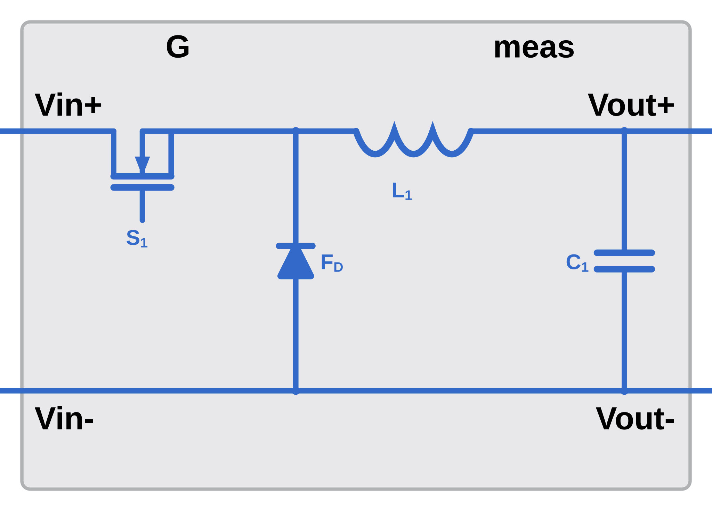
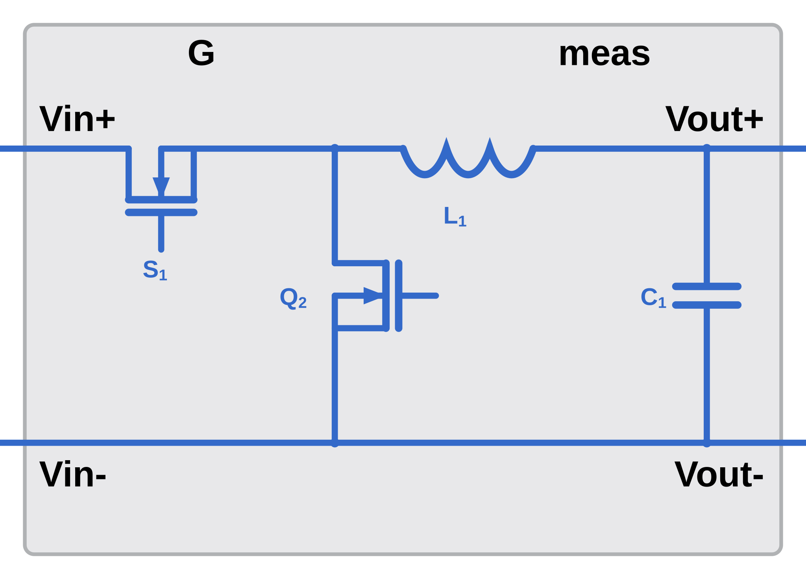
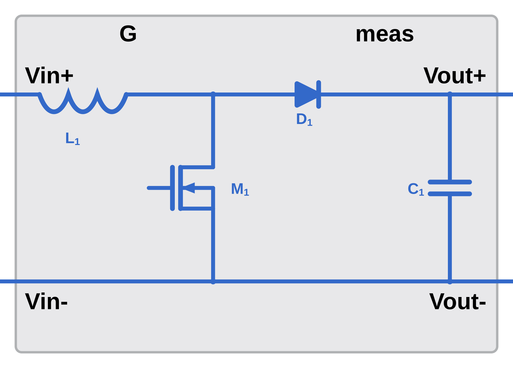
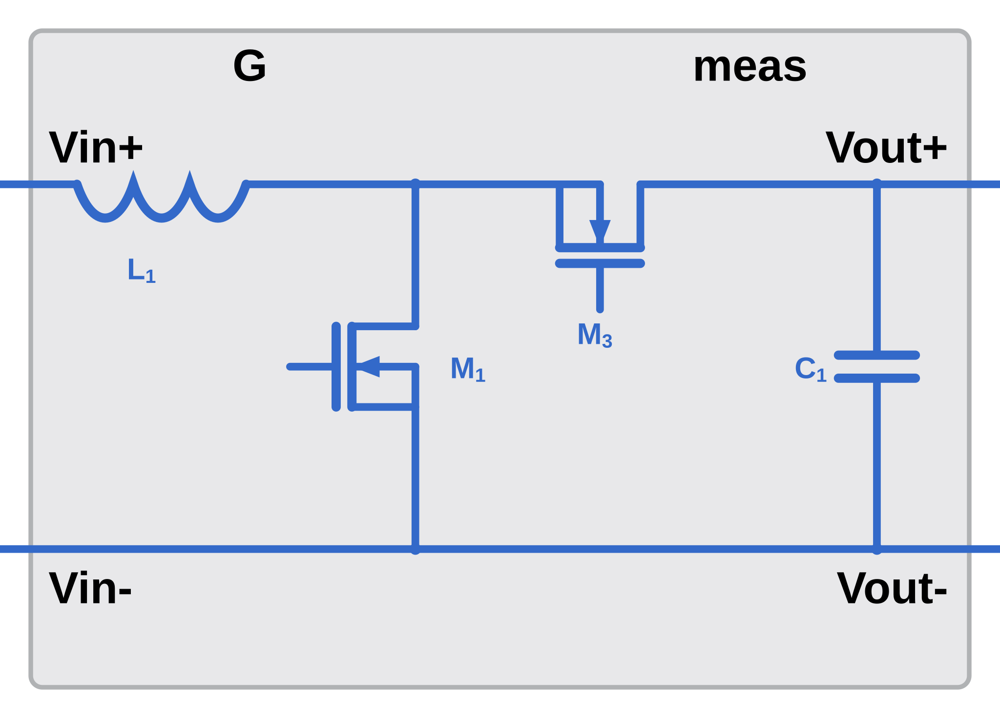
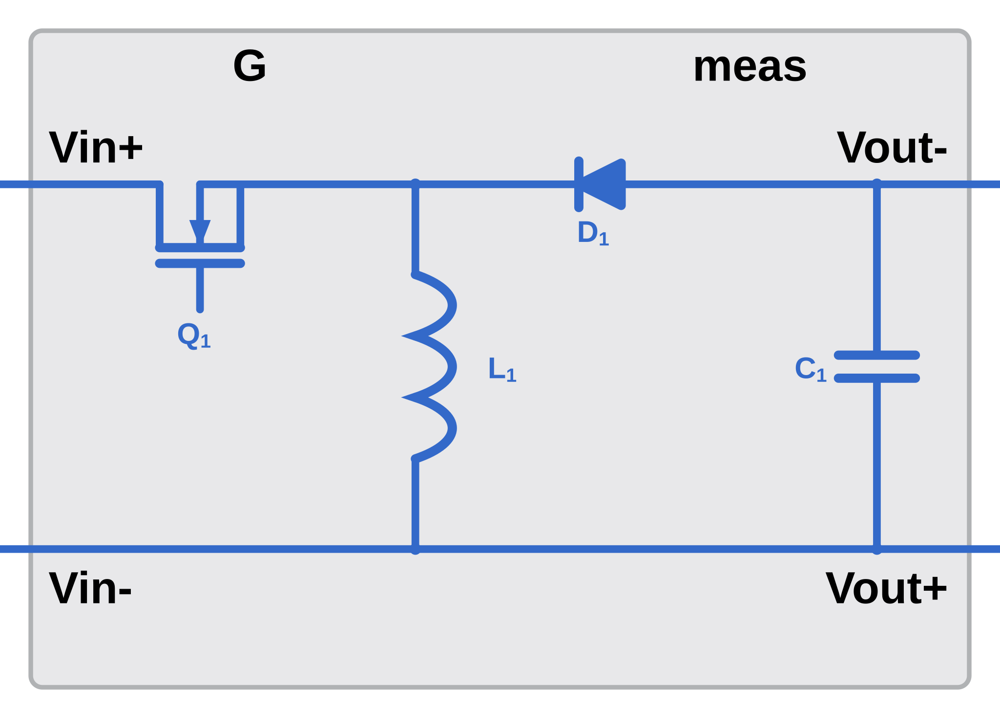
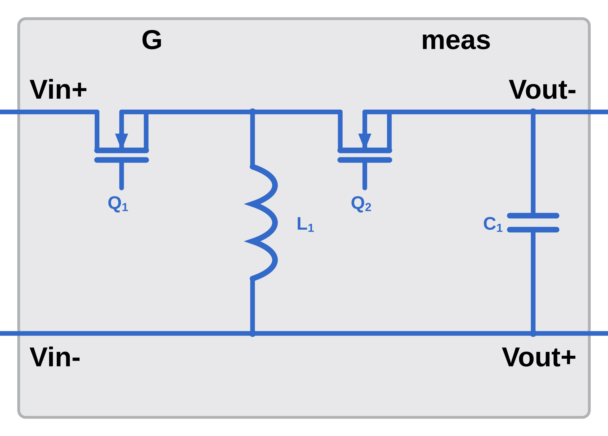

Buck, boost or buck-boost converter, with optional synchronous rectification
The Non-Isolated DC-DC block models one of six DC-DC power stages, selected by
the modelOption parameter. The choices are Buck, Synchronous Buck, Boost, Synchronous Boost, Buck-Boost
and Synchronous Buck-Boost. The gate port is one element wide for the three non-synchronous
topologies and two elements wide for the three synchronous ones.
Each topology contains a main switch, a freewheeling or rectifying element, the energy storage
inductor and the output filter capacitor. The non-synchronous topologies use a diode as the
freewheeling element; the synchronous topologies replace it with a second MOSFET. The inductor block
is named Lout in the buck topologies, Lin in the boost topologies and
Lstore in the buck-boost topologies.






| Port | Description |
|---|---|
| Vin+ | Positive input terminal. |
| Vin- | Negative input terminal. |
| Vout+ | Positive output terminal. |
| Vout- | Negative output terminal. |
| Port | Size | Description |
|---|---|---|
| G | 1 or 2 | Gate signal. One element for Buck, Boost and Buck-Boost; two elements for the three synchronous topologies. |
| Element | Drives | Role |
|---|---|---|
G(1) | Main switch | All six topologies. Labeled S1, Q1 or M1 on the block icons. |
G(2) | Synchronous rectifier MOSFET | Synchronous topologies only. Labeled Q2 or M3 on the block icons. |
modelOption. Changing from a
non-synchronous to a synchronous topology changes G from one element to two, so
the signal driving it has to change with it.
| Port | Size | Description |
|---|---|---|
| meas | bus, 5 elements | Measurement bus. |
| Element | Bus element | Measurement |
|---|---|---|
| 1 | IL [A] | Inductor current. |
| 2 | Vout [V] | Output voltage. |
| 3 | Iin [A] | Input current. |
| 4 | Vin [V] | Input voltage. |
| 5 | Iout [A] | Output current. |
modelOption selects the power stage and, with it, the width of the gate port.
modelOption | Gate width | Rectifying element |
|---|---|---|
| Buck | 1 | Freewheeling diode |
| Synchronous Buck | 2 | Low-side MOSFET |
| Boost | 1 | Boost diode |
| Synchronous Boost | 2 | Series MOSFET |
| Buck-Boost | 1 | Diode, inverting output |
| Synchronous Buck-Boost | 2 | MOSFET, inverting output |
| Dropdown | Options | Configured through |
|---|---|---|
switchDeviceOption | Ideal Switch, MOSFET (Ideal, Switching) with Thermal | Mask edit fields for the ideal switch. For the MOSFET, set one device on its own dialog and use Apply parameters to all MOSFET blocks. |
diodeDeviceOption | Ideal Diode, Tabulated Diode | Mask edit fields for the ideal diode; the device dialog for the tabulated diode. Shown for the three non-synchronous topologies only. |
The tables below list every mask parameter, including the ones hidden by the current dropdown selections. The Shown when column gives the selections that reveal each one.
| Parameter | Prompt | Default | Shown when |
|---|---|---|---|
modelOption | Topology | Buck | Synchronous Buck | Boost | Synchronous Boost (default) | Buck-Boost | Synchronous Buck-Boost | Always |
ratedPower | Rated power | 1500 W | Always |
Vin | Input voltage | 200 V | Always |
Vout | Output voltage | 400 V | Always |
Fsw | Switching frequency | 100000 Hz | Always |
L | Inductance | 4.356e-4 H | Always |
RL | Inductor resistance | 0.05 Ohm | Always |
C | Output capacitance | 1.8651e-4 F | Always |
Rco | Capacitor ESR | 0.02 Ohm | Always |
Vco | Initial output capacitor voltage | 320 V | Always |
| Parameter | Prompt | Default | Shown when |
|---|---|---|---|
switchDeviceOption | Main switch device | Ideal Switch (default) | MOSFET (Ideal, Switching) with Thermal | Always |
RdsOn | On-state resistance | 0.02 Ohm | switchDeviceOption = Ideal Switch |
GdsOff | Off-state conductance | 1e-8 1/Ohm | switchDeviceOption = Ideal Switch |
Vth | Threshold voltage | 0.5 V | switchDeviceOption = Ideal Switch |
VfBody | Body diode forward voltage | 2.04 V | switchDeviceOption = Ideal Switch |
RdBody | Body diode on resistance | 0.004 Ohm | switchDeviceOption = Ideal Switch |
GdBody | Body diode off conductance | 1e-6 1/Ohm | switchDeviceOption = Ideal Switch |
simTemp | Simulation temperature | 25 degC | modelOption = Buck | Boost | Buck-Boost and diodeDeviceOption = Tabulated Diodeor switchDeviceOption = MOSFET (Ideal, Switching) with Thermal |
| Parameter | Prompt | Default | Shown when |
|---|---|---|---|
diodeDeviceOption | Diode device | Ideal Diode (default) | Tabulated Diode | Always |
Vf | Diode forward voltage | 0.5 V | diodeDeviceOption = Ideal Diode |
Rd | Diode on resistance | 0.01 Ohm | diodeDeviceOption = Ideal Diode |
Gd | Diode off conductance | 1e-8 1/Ohm | diodeDeviceOption = Ideal Diode |
The Export to Unmasked Subsystem button writes the Non-Isolated DC-DC circuit to a new model with no mask, alongside a parameter file that reproduces every mask value. Use it to inspect or edit the circuit beyond what the mask exposes.
| File written to the current folder | Contents |
|---|---|
NonIsolatedDCDC_exported_<timestamp>.slx | The unmasked circuit. Its PreLoadFcn runs the parameter file. |
NonIsolatedDCDC_exported_<timestamp>_params.m | Assigns the structure NonIsolatedDCDC in the base workspace. Every block parameter of the exported model references a field of this structure. |
The Non-Isolated DC-DC block has an open-loop test harness,
NonIsolatedDCDCTestHarnessPlant.slx, in the test folder of NonIsolatedDCDCPlant. The harness holds this
block, the PWM generator blocks that drive its gate port, the input source, the load and a scope on
the measurement bus. It carries no controller: constant reference blocks set the operating point, so
the harness exercises the power stage on its own.
| Block | Role in the harness |
|---|---|
Non-Isolated DCDC | This block, taken from ConverterPlantLibrary, at the mask values the shipped converter model uses. |
Half Bridge PWM Generator | Half Bridge PWM Generator from ConverterLibrary. Switching frequency, dead time and gate levels from nonIsolatedDCDCController. Its complementary pair reaches the G port unchanged, because the generator emits the high-side gate first. |
Duty Reference | Constant duty nonIsolatedDCDCDesign.nominalDuty. |
Vin, Rload | DC voltage source Vin_dc and load resistance Rload_R, both from the defaults script. |
Bus Selector1, Mux, Mux1, Scope | Iin [A] with IL [A] on one axis, Vin [V] with Vout [V] on the next, and Iout [A] on the third. |
Opening the harness runs NonIsolatedDCDCDefaultInputParameters through its PreLoadFcn, so every
design and controller structure the generator masks read is in the base workspace before the first
simulation. The solver is ode23t, as in the converter model the harness was taken
from.
The stop time is 20 ms.
Boost PFC | Interleaved Boost PFC | Totem-Pole Boost PFC | DAB Converter | Non-Isolated DC-DC Controller